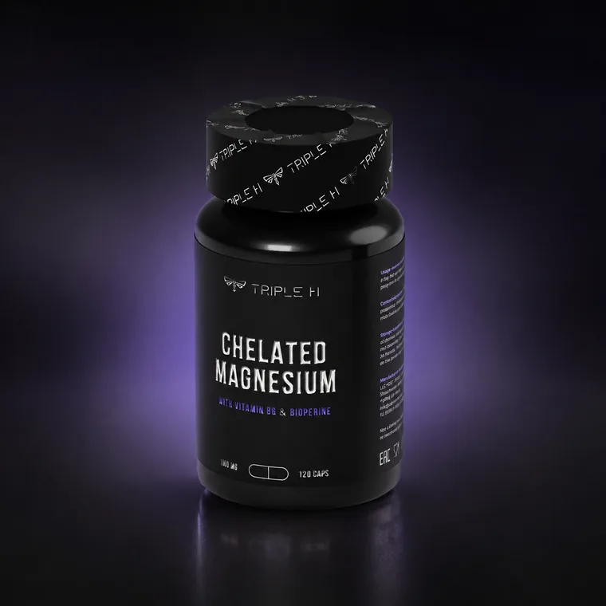
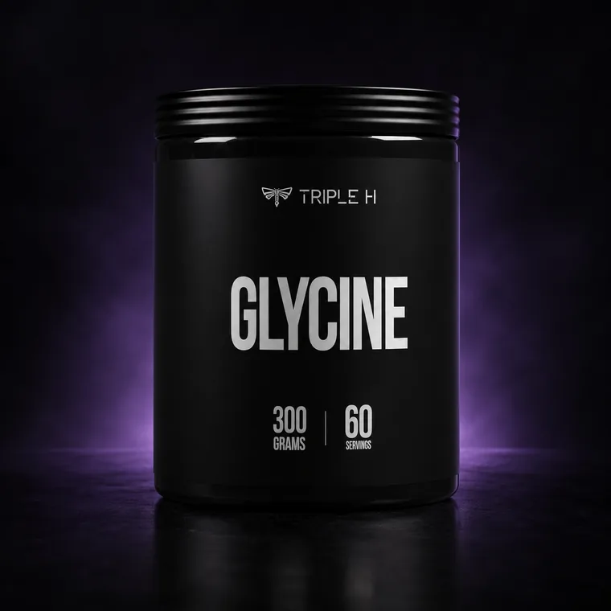
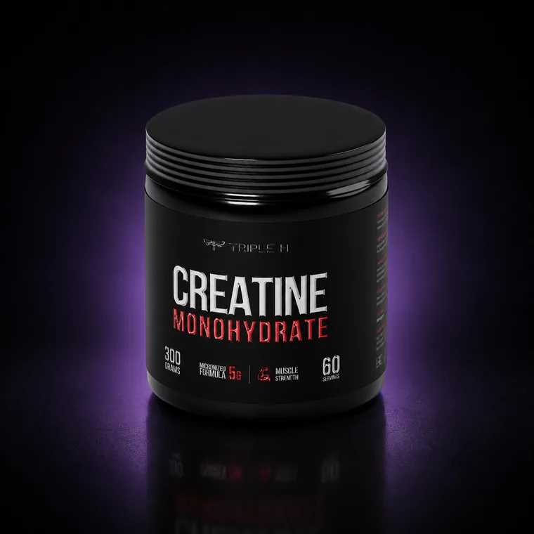
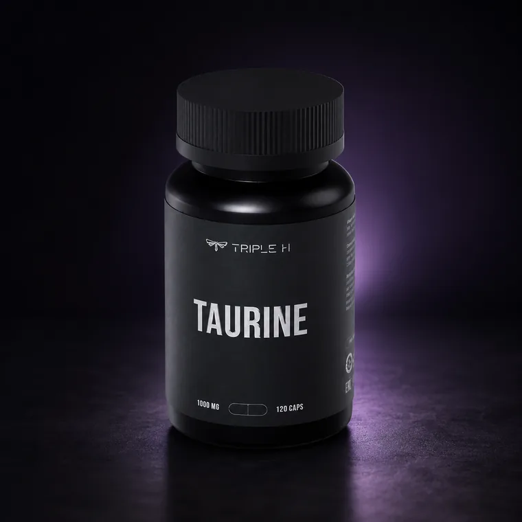
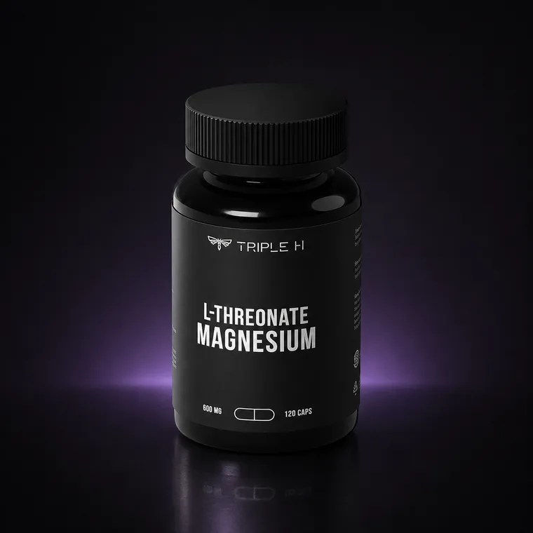
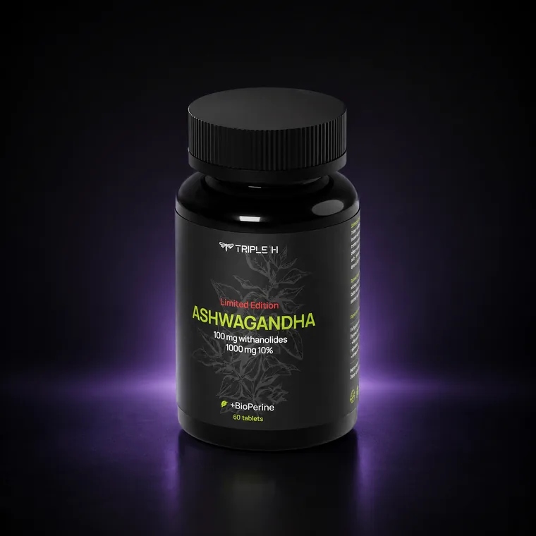
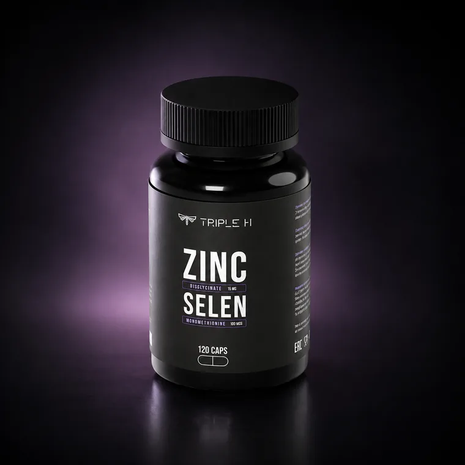

Энергия и ресурс
Когда хочется меньше уставать и стабильнее чувствовать себя в течение дня.
PERSONAL BIOHACKING · BY MUSTAFA
Помогаю выстроить систему сна, энергии и восстановления с учётом вашего образа жизни.
SYSTEM THINKING
У двух людей может быть похожий запрос, но совершенно разный режим, уровень нагрузки, привычки и цели. Поэтому персональный подход начинается с понимания контекста.
И только после этого можно говорить о том, какие инструменты действительно стоит рассматривать.
НАПРАВЛЕНИЯ
Не ищите идеальную категорию.
Выберите то, что сейчас ближе всего к вашему запросу.
Когда хочется меньше уставать и стабильнее чувствовать себя в течение дня.
Когда важно улучшить режим, качество отдыха и восстановление после нагрузок.
Когда сложно долго концентрироваться, сохранять ясность и рабочий темп.
Когда высокая нагрузка и напряжённый ритм заметно влияют на состояние.
Когда хочется системнее подойти к питанию, активности, весу и привычкам.
Когда хочется комплексно посмотреть на питание, привычки и общий контекст.
Когда нет одной конкретной задачи и хочется посмотреть на ситуацию целиком.
FREE SELECTION
Расскажите о своей ситуации. Запрос станет отправной точкой для персонального подбора продуктов.
Подбор носит информационно-рекомендательный характер и не является медицинской диагностикой или назначением лечения.
SELF-ASSESSMENT
Пройдите тест Бравермана и получите ориентировочный профиль четырёх систем. Результат можно использовать как дополнительную информацию при персональном разборе.
Пройти тест ↗Сделайте скриншот двух диаграмм с результатами теста — «Доминирующий тип» и «Дефицит нейромедиаторов» — и отправьте его Мустафе в Telegram.
Отправить скриншот МустафеТест является инструментом самооценки и не измеряет уровень нейромедиаторов лабораторно. Результаты не являются медицинской диагностикой.
PROCESS
Вы рассказываете, что хотите улучшить.
Рассматриваются режим, привычки, нагрузка и текущая ситуация.
Определяем приоритеты и подход.
PERSONAL STACK
Продукты рассматриваются как часть общей системы, а не как универсальное решение для каждого.







Подборка показана для наглядности. Конкретный состав и выбор продуктов определяются индивидуально с учётом цели, образа жизни и общего контекста.
О МУСТАФЕ
Биохакинг — это не стремление принимать как можно больше добавок. Это системный подход, в котором сон, питание, нагрузка, восстановление, привычки и дополнительные инструменты работают на одну задачу — внимательнее относиться к своему состоянию и выстраивать образ жизни под собственные цели.
Не копировать чужую схему. Не собирать десятки продуктов без понимания зачем. Сначала разобраться в контексте. Потом определить приоритеты. И только затем выбирать инструменты.
Написать Мустафе ↗FAQ
Нет. Материалы сайта и биохакинг-разбор не заменяют консультацию врача, медицинскую диагностику или лечение.
Да. Если ваша задача — подобрать продукты под конкретную цель, можно оставить запрос без персонального разбора.
Бесплатный подбор сфокусирован на выборе продуктов под конкретный запрос. Персональный разбор предполагает более широкий взгляд на образ жизни, режим, нагрузку, привычки и цели.
Нет. Сначала рассматривается ваш запрос и определяется дальнейшее направление.
Да. Укажите их в анкете, чтобы специалист видел общий контекст.
Вы можете оставить запрос, однако вопросы диагностики, лечения и совместимости с назначенной терапией необходимо обсуждать с врачом.
Да. Взаимодействие может проходить дистанционно.
Возможность доставки зависит от страны и конкретного продукта и уточняется отдельно.